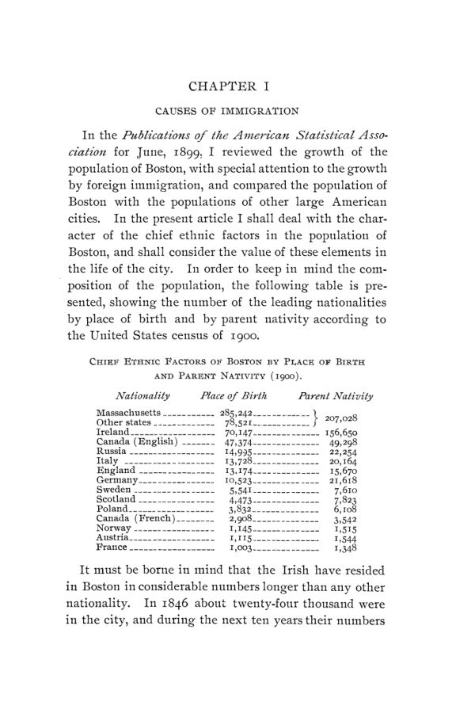

Bushee, 1903: moradia, trabalho e mortalidade na Boston imigrante
Leitura: 9 min
Em 1903, Frederick A. Bushee reuniu censos, registros de saúde e de assistência para comparar moradia, ocupação e mortalidade dos grupos de origem de Boston. Os números e o método, descritos.


North End, Boston, 1891. O censo dos cortiços da cidade percorre dois distritos eleitorais ocupados quase só por imigrantes italianos. Ali, 259 famílias, mais de um quarto da população dos dois distritos, viviam em média com duas pessoas por cômodo, e 154 delas ocupavam um único cômodo. A média dos dois distritos era de 1,41 pessoa por cômodo.
Os números estão em Ethnic Factors in the Population of Boston, de Frederick A. Bushee, publicado em maio de 1903 como volume 4, nº 2, da terceira série das Publications of the American Economic Association, em 171 páginas. O autor apresenta o estudo como continuação de um artigo seu de junho de 1899, nas publicações da American Statistical Association, sobre o crescimento da população de Boston pela imigração. Os dez capítulos tratam de causas da imigração, características dos imigrantes, padrão de vida, vitalidade, ocupações, pobreza, crime, naturalização, casamentos mistos e conclusão. No primeiro, Bushee diz que pretende considerar o valor de cada grupo na vida da cidade.
O prefácio é de William Z. Ripley. Ele compara o livro com Americans in Process, estudo da South End House sobre um distrito pequeno e homogêneo, feito sobretudo por investigação pessoal. Bushee, ao contrário, toma a cidade inteira e pode se apoiar quase só em estatísticas oficiais. Ripley dá o argumento de método: as estatísticas vitais são tabuladas por divisão administrativa, mas muitas vezes o que explica a taxa de um bairro é a proporção de cada grupo na sua população. Sobre uma taxa de mortalidade por distrito que ignore essa composição, ele escreve:
“Pode se tornar inteiramente enganosa” (“It may become entirely misleading”)
Qual era o tamanho da Boston imigrante?
A tabela de abertura usa o censo federal de 1900, por local de nascimento e por nascimento dos pais. Os nascidos em Massachusetts eram 285.242. Pelo nascimento dos pais, o grupo irlandês chegava a 156.650 pessoas. Segundo Bushee, Boston era a 15ª entre 161 cidades principais na proporção de estrangeiros e a segunda entre as seis maiores dos Estados Unidos. Os irlandeses eram os mais antigos: cerca de 24 mil em 1846 e perto de 60 mil dez anos depois.
Como e quanto se pagava para morar?
O capítulo sobre padrão de vida combina o censo de cortiços de 1891, relatórios do escritório de estatísticas do trabalho de Massachusetts e boletins do Departamento do Trabalho. Bushee registra preços. Dez ou doze homens solteiros alugavam juntos um cômodo, cada um pagando 25 ou 30 centavos por semana; duas refeições por dia custavam cerca de um dólar semanal. Em quartos pequenos sem janela externa, um homem solteiro conseguia onde dormir por 50 centavos por semana.
Separadas dos cortiços estão as pensões, onde viviam caixeiros, vendedores, vendedoras, mecânicos, garçonetes e trabalhadores sem qualificação. O censo estadual de 1895 contou 54.442 pensionistas e inquilinos de quartos em Boston. Um quarto de frente grande custava 4 ou 5 dólares por semana, em geral para duas pessoas; o de fundos, cerca de um dólar menos. Bushee insiste na distinção:
“é enganoso agrupar juntas a classe do cortiço e a da pensão” (“it is misleading to group the tenement and the lodging house classes together”)
O que as taxas de mortalidade medem, e o que não medem?
Para a mortalidade, Bushee toma a média de óbitos de 1894, 1895 e 1896, compilada pelo conselho de saúde, e a divide pela população do censo estadual de 1895. Ele calcula a taxa de duas formas: por local de nascimento e por nascimento dos pais. A escolha muda o resultado. Entre os nascidos na Itália, a taxa era de 14,93 por mil; pelo nascimento dos pais, que inclui os filhos nascidos em Boston, subia para 25,88. O autor atribui a diferença sobretudo à mortalidade infantil.
O próprio autor enumera as limitações. A segunda geração de estrangeiros entra como “nativa”, o que infla a natalidade dos grupos estrangeiros e reduz a dos nativos. Grupos recém-chegados não são populações normais, porque concentram adultos em idade reprodutiva; por isso, diz ele, as taxas de natalidade mostram o crescimento efetivo de cada grupo, não sua fecundidade. Os nascimentos por origem só existiam para 1889 e 1890, e eram levantados de casa em casa; o registro por médicos começou em 1892.
Para conferir, Bushee usa um segundo método: o aumento dos nascidos em Boston de pais estrangeiros entre 1890 e 1895. O grupo russo, com 11.979 pessoas em 1895, teve aumento natural de 3.001 no quinquênio; o irlandês, com 71.571, de 3.133. Entre 1890 e 1895, ainda segundo o autor, o grupo russo cresceu 178% pela imigração e 25% pelo crescimento natural. Para a natalidade baixa dos americanos nativos, ele oferece uma explicação econômica: a concorrência nas grandes cidades tornaria a manutenção do padrão de vida e da posição social incompatível com famílias grandes, e às vezes com o próprio casamento.
Onde e em que se trabalhava?
O censo de 1895 não trazia ocupações por local de nascimento, e Bushee recorre ao censo estadual de 1885, comparado com 1870. Em 1885, 68,67% dos homens e 29,53% das mulheres de Boston tinham ocupação remunerada. A parcela da população total com ocupação passou de 41% em 1870 para 48,2% em 1885 e 48,5% em 1895; o aumento entre 1885 e 1895, diz o autor, deveu-se inteiramente ao trabalho feminino.
Em 1895, a produção manufatureira ocupava menos de um terço da população ativa, ou 15% da população total, e o comércio e o transporte ocupavam quase tanto quanto ela. O serviço pessoal e doméstico respondia por 18,8% dos ocupados, e o governo, por 2,8%. Para Bushee, os números mostram Boston como centro de distribuição dos produtos da Nova Inglaterra.
O caso dos carpinteiros é o argumento econômico mais desenvolvido do capítulo. Quem vinha só para a temporada, escreve o autor, tinha pouco interesse permanente na cidade, sentia menos o custo de vida americano e se sindicalizava menos; daí aceitar salários menores, o que impedia o sindicato de elevar o padrão local.
Que dados havia sobre pobreza?
Os asilos municipais são a fonte principal. No inverno de 1899-1900, o de Long Island tinha 616 internos e o de Charlestown, reservado a idosos, 99, num total de 715. Bushee adverte que o número não inclui os pobres sem domicílio legal em Boston, enviados a instituições estaduais, cuja nacionalidade não podia ser obtida. Ele usa ainda uma tabela de Amos G. Warner sobre causas da pobreza em várias cidades: em 2.075 casos, doença respondia por 26,16%, bebida por 22,89% e problemas de emprego por 19,95%.
Na minha leitura
Na minha leitura, o valor do livro está menos nas conclusões sobre os grupos e mais no inventário de fontes que ele mostra para uma cidade americana de 1900: censo de cortiços, censo estadual de ocupações, registros de óbitos e de nascimentos, asilos e entidades de caridade. E nas cautelas que o próprio autor registra. O salto da mortalidade italiana de 14,93 para 25,88 conforme se conte por local de nascimento ou por nascimento dos pais é uma lição de método: a definição do grupo decide o resultado antes de qualquer interpretação.
As tabelas comparam taxas brutas, sem padronizar idade, renda ou moradia, e os denominadores vêm de anos diferentes dos numeradores. Com esses dados não é possível separar o que cabe à origem do que cabe à composição etária, ao tempo de residência e ao bairro, a mesma armadilha que Ripley aponta no prefácio para as taxas por distrito. O trecho sobre os carpinteiros, por sua vez, antecipa um tema permanente da economia do trabalho: o efeito da migração temporária sobre o poder de barganha de um sindicato local.
Glossário
- Cortiço (tenement)
- prédio de aluguel dividido em vários apartamentos ou cômodos, com instalações muitas vezes compartilhadas.
- Pensão (lodging house)
- casa dedicada a alugar quartos a inquilinos, em geral solteiros.
- Nascimento dos pais (parent nativity)
- classificação de uma pessoa pela origem do pai e da mãe, e não pelo próprio local de nascimento.
- Taxa bruta de mortalidade
- óbitos por mil habitantes, sem ajuste pela composição etária da população.
- Crescimento natural
- diferença entre nascimentos e óbitos, sem contar migração.
- Asilo municipal (almshouse)
- instituição pública que abrigava pessoas sem meios de sustento.
- Ocupação remunerada (gainful occupation)
- categoria censitária de quem exerce trabalho pelo qual recebe pagamento.
Fontes
- Ethnic Factors in the Population of Boston (pp. 1–171). JSTOR · Internet Archive (PDF)
- Sumário da edição no JSTOR: Publications of the American Economic Association, 3ª série, vol. 4, nº 2.
Documento em domínio público (EUA, publicado antes de 1931), via JSTOR Early Journal Content e Internet Archive. Resumo e comentário do autor deste site, sem afiliação com a American Economic Association. Encontrou um erro? Escreva: a correção é publicada no próprio texto, com data.
← Nº 65 · Filadélfia, 1902: fretes, salários, sindicatos e o papel do economista Nº 67 · Coman, 1903: meio século de trabalho por contrato no Havaí →